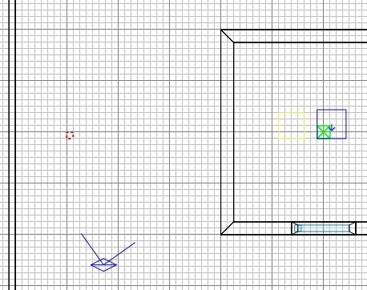
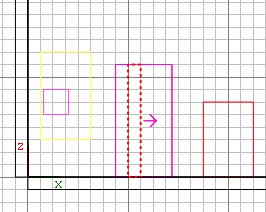
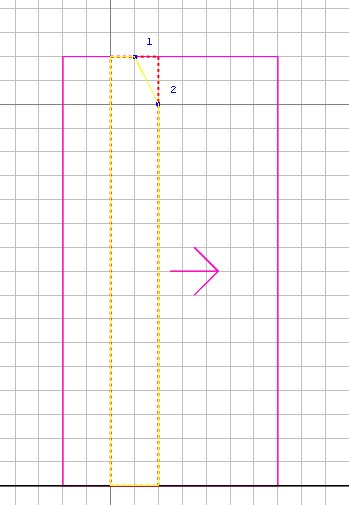
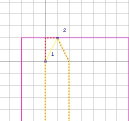
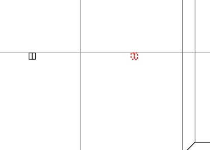
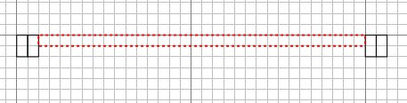
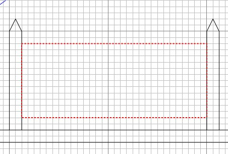
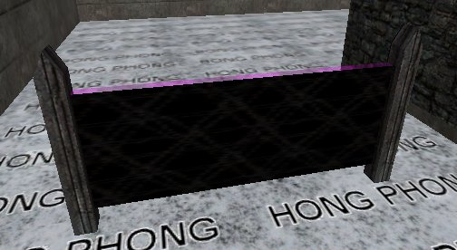

|
We're going to make some barbed wire,
because it demonstrates a number of new features
and techniques and reinforces some we've
touched on before. You'll use these a lot.
Run Radiant, open the map, and select one
of the solitary explosive fence posts.
Duplicate it, right-click in the 2D and
Ungroup Entity so that it returns to being a
normal brush. Drag the brush over to
roughly where shown below. This will
be the first post of the barbed wire.

Ctrl+tab and make the post a bit higher,
say the height of a player start box:

Press 3 and zoom in close.
Turn on the clipper tool (X) and click where
marked:

If the big chunk is not yellow, press
ctrl+return so that it is.
Press return to chop off the small chunk.
Click again as shown, make sure the big
part is yellow and press return to chop off
the other small chunk.

Press X to turn clipping off.
Ctrl+tab twice to get overhead view, zoom
out again, press 8 and duplicate the
post. Move it a bit further away as
shown.

Press ESC, then 3 to return to a
small grid scale. We're going to
string some barbed wire between the posts.
Draw a brush as shown. Click
Textures\common and choose the NoDraw
(pink/mauve check) texture for the whole
brush. As the name suggests, faces
with NoDraw texture are not drawn.

Ctrl+tab so you can set the height and
position like this (press alt+2 or click
View\Filter\Entities to prevent the display
of entities (incl models) so that what you
are working on is easier to see. You
can filter all sorts of things out of the
display under the Filter menu).

Right click in 2D and Make Detail.
Then select the face that is nearest the
Axis start box and click Textures\alpha
barb_wire. Then press S, set the width
and height boxes to 2 and press Fit.
We get the barbed wire texture compressed a
bit to look better on the brush.

Ok so we have the barbed wire texture in
place. But the barbwire face on the
nodraw brush won't stop the player from
running through it. We'll need to put
a clip brush in there too.
Select the barbed wire brush and
duplicate it.
The common textures should still
be available to you in the textures
window. Click on the Clip
(pink/red check) texture.
Then drag the clip brush back so it
occupies exactly the same space as the
barbed wire brush.
The clip brush, like the one for the
tree, will not be drawn. But unlike
the Clip Weapon Wood, the Clip only stops
player movement; it doesn't stop bullets or
projectiles.
Press ESC.
|